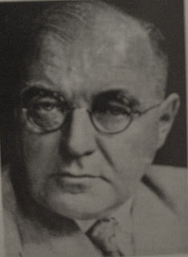

|  |
Behr's optic atrophy = a recessive form of optic atrophy which may occur in isolation or may be associated with deafness, diabetes, and neurologic complications
Carl Behr attended the universities of Freiburg im Breisgau, Kiel, Munich, and Berlin, and received his doctorate in Kiel in 1900. He was intern and assistant physician at the Eppendorfer and St- George's hospitals in Hamburg and at the university ophthalmological clinic in Kiel, where he was habilitated for ophthalmology in 1910. He became professor extraordinary in Kiel in 1916, and in 1923 was appointed to the chair of ophthalmology in Hamburg. His particular field of interest was neuro-ophthalmological disorders, and he delineated several new entities, including the condition which now bears his name.
Behr also made significant contributions to the understanding of the pathological processes in papilloedema and tabetic optic atrophy. He had a successful career but the last decade of his life was marred by the death of his wife in an accident, financial difficulties and the bombing of his hospital in World War II.
Bibliography: